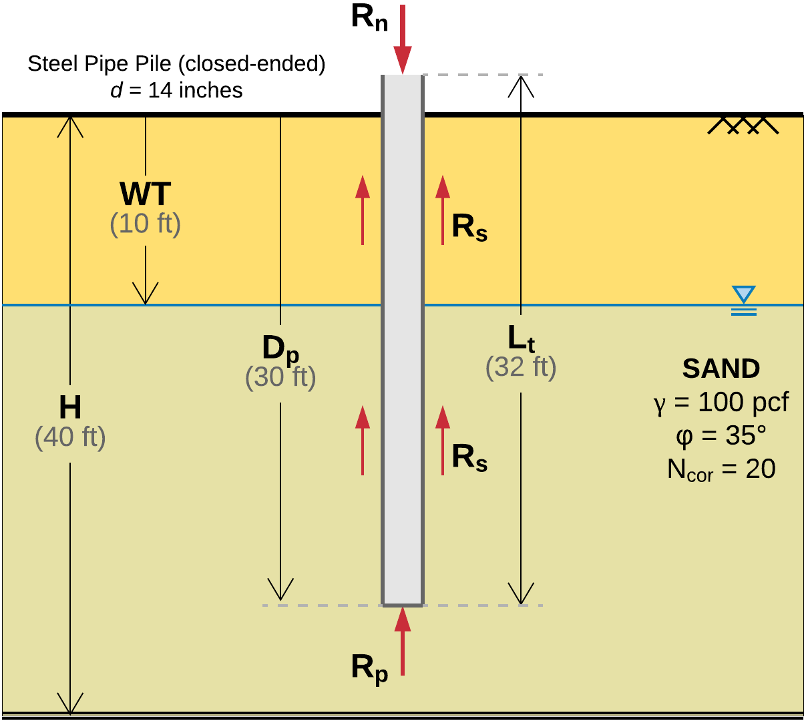

Pile Capacity Calculations¶
The following examples detail the steps required to run pile capacity
calculations in edafos.
Piles in Sand¶
Consider the example in Figure 10.

{kind=link}
Figure 10 Closed-ended steel pipe pile in sand.
The calculated capacity, \(R_n\), (aka nominal resistance) is the sum of the frictional (aka shaft) resistance, \(R_s\), and the end-bearing (aka toe) resistance, \(R_p\), of the pile. Hence,
\[R_n = R_s + R_p\]
Project setup
In edafos, this example is set up as follows:
# Import the Project, SoilProfile and Pile classes
from edafos.project import Project
from edafos.soil import SoilProfile
from edafos.deepfoundations import Pile
# Create the project object
project = Project(unit_system='English', project_name='Example 1')
# Create a SoilProfile object with initial parameters
profile = SoilProfile(unit_system='English', water_table=10)
# Add layer properties
profile.add_layer(soil_type='cohesionless',
height=40,
tuw=100,
field_phi=35,
corr_n=20)
# Attach the soil profile to the project
project.attach_sp(profile)
# Create a pile
pile = Pile(unit_system='English',
pile_type='pipe-closed',
length=32,
pen_depth=30,
diameter=14,
thickness=0.75)
# Attach the pile to the project
project.attach_pile(pile)
# Why not get the effective stress at say 15-ft??...
project.sp.calculate_stress(15)
And this is the output:
# Import the Project, SoilProfile and Pile classes
In [1]: from edafos.project import Project
In [2]: from edafos.soil import SoilProfile
In [3]: from edafos.deepfoundations import Pile
# Create the project object
In [4]: project = Project(unit_system='English', project_name='Example 1')
# Create a SoilProfile object with initial parameters
In [5]: profile = SoilProfile(unit_system='English', water_table=10)
# Add layer properties
In [6]: profile.add_layer(soil_type='cohesionless',
...: height=40,
...: tuw=100,
...: field_phi=35,
...: corr_n=20)
...:
Out[6]: <edafos.soil.profile.SoilProfile at 0x10d04d390>
# Attach the soil profile to the project
In [7]: project.attach_sp(profile)
���������������������������������������������������������Out[7]: <edafos.project.Project at 0x10d04d780>
# Create a pile
In [8]: pile = Pile(unit_system='English',
...: pile_type='pipe-closed',
...: length=32,
...: pen_depth=30,
...: diameter=14,
...: thickness=0.75)
...:
# Attach the pile to the project
In [9]: project.attach_pile(pile)
Out[9]: <edafos.project.Project at 0x10d04d780>
# Why not get the effective stress at say 15-ft??...
In [10]: project.sp.calculate_stress(15)
������������������������������������������������Out[10]: <Quantity(1.188, 'kip / foot ** 2')>
In [11]: print(project)
����������������������������������������������������������������������������������������������Project ID: 75250284
Project Name: Example 1
Datetime: 2018-06-19 11:42:45.529419
Unit System: English
------------
Soil Profile WT: 10.0 foot
Pile Type: pipe-closed